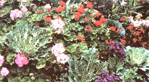
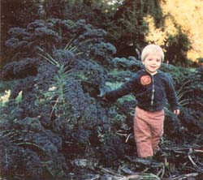
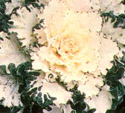
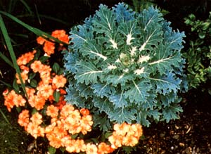

Adapted from The Beautiful Food Garden by Kate Rogers Gessert, copyright© 1983 by Van Nostrand Reinhold Co., Inc. Used by permission.
Why keep your flower garden and the vegetable plot separated? Many plants are both attractive and tasty, allowing you to surround your home with an "edible landscape" Consider
For some years now I've been experimenting with the use of food plant varieties as decorative additions to my garden. My ideal dualpurpose fruit or vegetable would be attractive in leaf, in flower, and in fruit. It would also be tasty and have a long harvest season. Furthermore, this versatile "dream" variety could be grown in combination with strictly ornamental trees and shrubs or in a largely edible landscape composed primarily of flowers, vegetables, fruits, and nuts.
As you'd imagine, few food plants meet all these criteria. However, kale is one vegetable that does satisfy a good many of them. In fact, this hardy and healthful green can be either an ornamental food plant or a valuable contribution to a nondecorative vegetable garden.
Kale (Brassica oleracea acephala), a full-leaved member of the cabbage family, is similar to broccoli in growing habit and culinary use. And, since kale is quite winter-hardy, it can withstand temperatures below freezing (some varieties to as low as - 10°F!), and, if lightly protected, will continue to thrive during the cold season in many parts of the country.
Dwarf varieties grow in neat compact clusters that can reach 1-1/2 feet tall and 2 feet wide. Their finely curled leaves are usually bluish green in color, and make for tasty garden greens when harvested. In cold climates, the plants often stop growing in late fall and resume in early spring.
Nondwarf varieties have loose, tall growth. Their leaves are less ornate than are those of dwarf kale ... and they tend to be a duller green. Because the plants are tall and lanky, however, with their leaves held well above the soil, they're better protected from intense groundlevel freezes than are the dwarfs.
Kale grows best in a rich soil that's been well fertilized. The seed can be sown from early spring to late summer ... but July or August plantings (for fall and winter harvesting) are especially popular, since kale's flavor improves when the leaves are exposed to relatively mild (above 20°F) frosts. (This vegetable can tolerate hot weather, too, but its leaves may become tough.) It likes full sun ... but will also manage fairly well in partial shade.
You can plant your own leafy greens, using seeds or starts, as soon as the ground can be worked. Either way, choose a sunny spot for them and water the patch well. Sow the curly-leaved types thinly in a seedbed and then transplant the little shoots when the danger of frost is past, setting them 18 inches apart. You'll find that plainleaved varieties do best if they are not transplanted, and such seeds should be sown directly in the ground in early spring.
Even though kale is extremely hardy and has a built-in resistance to clubroot-one of the cabbage clan's most unpleasant ailments - the leafy vegetable can be overrun with pests. Cabbageworms and aphids are its two most common attackers. Fortunately, the cab worms' holes will be fairly inconspicuous in the frilly rosettes of dwarf kale. So if you grow the plants strictly for ornamental use, it's best to keep in mind that the curly leaves will show damage less than plain ones.
But what about the gardener who - because he or she is concerned with food value as well as beauty - wants to keep plant damage a minimum? Well, there are a few steps such a grower can take to prevent a heavy infestation.
First of all, try to raise your own plants from seed, or at least buy them from a local farm or nursery. If you do so, you can be reasonably sure your seedlings won't be infected before you plant them. Then see that your kale patch is rich in humus and properly drained. A healthy plant will have the best chance of defeating pests and diseases. Furthermore, you can protect your seedlings from birds by covering the patch with a fine nylon netting or mesh. This won't harm our feathered friends, but it will keep them away from the new greenery. Finally, practice yearly crop rotation to help insure that a pest or disease doesn't return more often than once in several years. [EDITOR'S NOTE. Bacillus thuringiensis is, of course, effective against cabbageworms.]
Dwarf kale plants look great when used to line a path or provide a border for a flowerbed. If you plan to harvest winter greens, planting your kale alongside a path makes picking an easy job in bad weather. You might also want to experiment with growing kale near other frilly or fine-textured foliage. The dense heads will easily hold their own against big, bold plants. They combine nicely with almost any shade of green, and will complement the colors of your favorite flowers, as well.
In the fall, kale can serve as a mild-colored background for a bright display of asters and chrysanthemums ... or its own flashier relative, flower kale. In spring, it will look good as a decorative companion for flowering bulbs (such as tall snowdrop, crocus, star-of-the-snow, daffodil, and hyacinth), as well as for early-blooming shrubs (including cornelian cherry, winter jasmine, forsythia, star magnolia, and quince). You can also plant kale around the base of deciduous trees that hold their fruit in winter or bloom in early spring (some crab apples do both), or place them in front of evergreens as a lighter-shaded contrast to the conifers' deep blues and greens.
Chopped curly kale leaves can be used as a garnish for vegetable platters or mixed salads. And, as a more substantial food in its own right, the versatile vegetable can be served uncooked, steamed, stewed, creamed, baked ... or even stir-fried.
The leaves aren't the only edible part of this wonder plant, either. Young kale flowers can be eaten raw or cooked for an additional dining treat. And remember, when you include this Brassica in your menu, you'll be adding impressive amounts of iron and vitamins!
There are many fine varieties of kale to choose from. Dwarf Blue Scotch (also called Dwarf Blue Curled Vates) is a beautiful cold-hardy plant with tasty, deep blue gray leaves. Green Curled Scotch looks similar except that its gray green color isn't quite as interesting (in my opinion) ... and the plant is somewhat less cold-hardy than Dwarf Blue.
The taller varieties - including Pentland Brigg, Siberian, Westland ,Winter and Tall Green Curled - have a more open growth habit than the dwarf kale species. These will reach 2 feet or more in height and form longstemmed, loose rosettes of gray green leaves. I've found that Pentland Brigg has the best cold-hardiness, but Westland Winter (whose leaves are also especially mild and tender) is the most attractive in fact, it's the only tall variety really recommended for oriental use. As the nondwarf plants lengthen during the winter, though, they can become awkward-looking and will sometimes even fallover.
Finally, two European hybrids, Fribor and Arpad Royal Sluis, could be said to bridge the gap between the tall kales and the dwarf curly types. They are tall and curly, erect, dense-growing, and very uniform and the Fribor variety is available in the U.S. for the first time this year (see the accompanying list of sources).
The leaves of flower kale varieties (which are also edible) can range shape from plain cabbagelike fronds to frilly foliage. These ornamentals form tight clusters up to 1 foot tall and 2 feet wide. The outer leaves range in color from gray green to blue green, overlaid with creamy white, pink, purple, or deep rose. The most intense colors be found toward the center of each plant ... with bright veins running through the outermost leaves. The colorful kales are strikwhen set against a somber background of evergreen bushes and gray walls. And for the four-season garden, asters, chrysanthemums, leeks, cabbage, and kale make attractive frost-hardy companions.
If you're concerned about having very uniform beds, plant a double row to disguise the irregularities of size and shape common to flower kale. Or sow the seed in an inconspicuous area, and later transplant the best specimens to a prominent place for fall and/or winter display.
The best time to start flowering kale will vary with regional summer weather conditions. In cool climates, spring-planted kale will last into the fall. In warmer areas, however, it may be best to sow the seed in midsummer... to avoid the plants' bolting, but still allow them enough time to reach a good size by autumn. Many flower kale varieties will remain undamaged down to about 20°F ... and as the weather cools, their leaf colors typically become even more intense.
It's fairly easy to find both flower kale and flower cabbage seeds listed in seed catalogs. In general, you'll discover that seeds labeled "flower kale" will produce plants with frilly foliage, while "flower cabbage" seeds tend to become plants with plainer leaves. It's rare, though, to find a specific variety of one color and form offered by American firms (they usually sell mixed seeds), but Japanese companies often list packets containing a single variety.
Only two of these Oriental types - Feather-Leaved Coral Queen and Feather-Leaved Coral Prince - are currently available in the United States. Both have deeply cut leaves that form broad, flat-topped rosettes and are fairly uniform in size. Coral Queen plants are rose purple and blue gray, while Coral Prince will be white and blue gray. The growth pattern of these two varieties is a little different from that of other kales: When they're mass-planted, their response to crowding is not to stay small, but - instead - to angle themselves outward to make room for one another.
There are, of course, a great number of varieties other than those I've described here ... in fact, you may find it difficult to narrow down your selections. After all, you could choose kale that lends itself to colorful ornamental plantings ... or you could simply plant a hardy year-round food crop. But whether you sow plain or pretty kale - in your vegetable garden or along a walkway - the versatile plants will provide you with beauty and nutrition.
EDITOR'S NOTE. For more information about ornamental kale and other ways to use food plants in landscaping-you may want to read Kate Rogers Gessert's book The Beautiful Food Garden ($25.50), which was recently published by Van Nostrand Reinhold Company.
Abundant Life Seed Foundation (Dwarf Blue Scotch, Green Curled Scotch, Siberian Tall Green Curled), Dept TMEN, P.O. Box 772, Port Townsend Washington 98368 (catalogs/newsletters for one year. $2.00)
Burpee Seed Company (Dwarf Blue Scotch, Red on Green Ornamental), Dept. TMEN, 300 Park Avenue, Warminster, Pennsylvania 18991 (catalog: free)
De Giorgi Company (Dwarf Blue Scotch, Green Curled Scotch, Mixed Ornamental Cabbage, Mixed Ornamental Kale), Dept. TMEN, P.O. Box 413, Council Bluffs, Iowa 51502 (catalog. $1.00)
Grace's Gardens (Feather Leaved Coral Prince, Feather Leaved Coral Queen), Dept. TMEN, 10 Bay Street, Westport, Connecticut 06880 (catalog. 50 cents
Jonathan Green & Sons, Inc. (Fribor), Dept. TMEN, Box 9, Farmingdale, New Jersey 07727 (catalog. free)
Joseph Hams Company (Dwarf Blue Scotch, Red on Green Ornamental), Dept. TMEN, Moreton Farm, 3670 Buffalo Road, Rochester, New York 14624 (catalog. free)
Stokes Seeds (Green Curled Scotch, Mixed Ornamental Cabbage, Mixed Ornamental Kale), Dept. TMEN, 737 Main Street, Box 548, Buffalo, New York 14240
Territorial Seed Company (Westland Winter) Dept. TMEN, PO. Box 27, Lorane, Oregon 97451 (catalog for gardeners west of the Cascades only. free)
Thompson & Morgan (Pentland Brigg Dept. TMEN, PO. Box 531, Pittston, Pennsylvania 18640 (catalog: free)
|
 Flower kale, pink geraniums, red verbena, heliotrope, and lavender share this pretty plot |
 The author's son Joseph stands beside an especially tall wintergrowing kale |
 A fine example of ""White Christmas"" flower kale, which brightens any landscape |
|
 A combination of flower kale and impatiens makes for an attractive display |
|
|